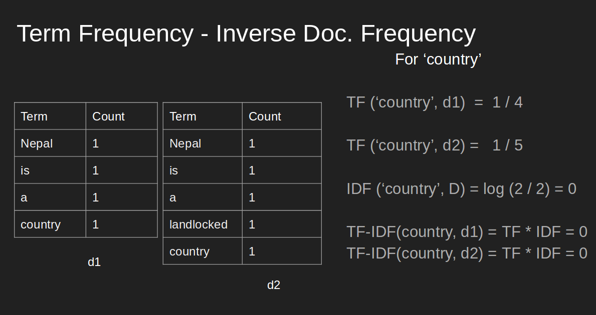
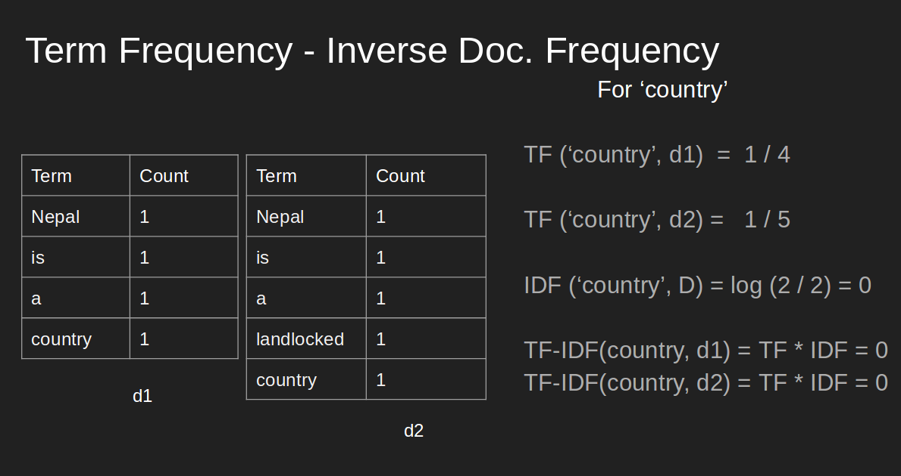

Interpreting Centrality Measures for Network Analysis
Network has been taken as a tool for describing complex systems or interactions around us. Few prominent complex systems are:
-
Our society where almost 7 billions individuals exist/ and the interactions between them in one or other ways.
-
Genes in our body, interactions between gene molecules ( Protein-Protein interaction networks)
Peoply usually visualize the network to see cluter/ densely linked clusters and try to analyze, predict relation between nodes, figure out similarity between nodes in the network.
Figuring out the central nodes/vertices is also an important network analysis process because centrality measures :
a. Existing influence of a node on other nodes
b. Information flow in and out from a node or towards it
c. Finding node/s which is/are acting as bridge between two different/big groups 
